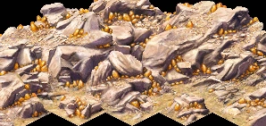

Ore Deposit
An ore deposit is a fixed terrain feature that appears on the map and is the sole source of metal resources in the game. Three types exist: gold ore, copper ore, and gemstone. Each type requires a dedicated extraction building placed directly on the deposit tiles to produce its resource. Deposits are finite and never replenished.
Overview

Ore deposits appear on the map as rocky outcroppings with a distinctive metallic sheen, visually distinguishable from ordinary desert or rocky terrain even without any overlay active. Their position is fixed at mission start and cannot be changed. The placement preview of an extraction building turns green only when all four tiles of its 2×2 footprint land on valid deposit terrain — hovering the cursor is the easiest way to identify deposit boundaries before placing.
Unlike farmland, ore deposits do not require any seasonal preparation. They are available from the moment the mission starts, and a mine placed on them will begin producing as soon as workers are assigned.
Deposit types
| Deposit | Extractor | Resource | Delivered to | Use |
|---|---|---|---|---|
| Gold ore | Gold Mine | Gold | Palace | Converted to deben income; bypasses Storage Yards entirely |
| Copper ore | Copper Mine | Copper | Storage Yard | Input for Weaponsmith → Weapons for forts |
| Gemstone | Gemstone Mine | Gems | Storage Yard | Input for Jeweler → Jewelry for housing and trade |
All three deposit types share the same fundamental mechanics — 2×2 placement requirement, finite ore, depletion per production tick, and random collapse risk. The key difference is the output path: gold bypasses the storage system and is delivered straight to the Palace as treasury income, while copper and gemstones enter the standard cartpusher-to-storage-yard chain and must then be collected by the relevant workshop.
Finding deposits on the map
Deposits are always visible on the default terrain view — no overlay is required to locate them. Look for patches of lighter rocky ground with a metallic texture distinct from the surrounding desert. On zoomed-out views the texture difference is subtle; zoom in to confirm the deposit boundary before placing a mine.
The Raw Materials overlay (accessible from the info window of any active mine, or via the overlay menu) colour-codes each tile by remaining ore level: bright indicates high reserves, progressively darker shading indicates depletion. Use this overlay to:
- Compare multiple deposits when choosing where to place a second mine.
- Monitor how fast an active mine is consuming its deposit.
- Identify tiles that are nearly or fully exhausted.
Depletion
Each day that a mine advances its internal production progress, the underlying ore tile is partially depleted. The depletion amount per day is proportional to the production tick size, which in turn depends on current worker count. A fully staffed mine depletes ore faster than an understaffed one — but produces proportionally more. On most maps a single deposit sustains one mine for many in-game decades; resource-sparse maps or two mines sharing one small deposit will exhaust it much sooner.
When a tile's ore value reaches zero the mine becomes idle on that tile. If all four footprint tiles are exhausted the mine stops producing entirely. Demolishing the idle mine and relocating it to a fresh deposit — if one exists on the map — is the only remedy. Deposits are never replenished.
The optional feature gameplay_change_goldmine_twice_production halves the production divider for Gold Mines, effectively doubling both output and depletion rate for gold ore deposits.
Developer reference
All paths relative to the repository root.
Placement requirement — src/scripts/buildings.js
Ore-based extraction buildings declare terrain requirements in the needs block. Example for the Gold Mine:
building_mine_gold { needs { rock:true, ore:true } // rock = rocky terrain type required on footprint tiles // ore = non-zero golden value in map tile data required }
Copper Mine and Gemstone Mine use identical needs flags. The specific resource produced is determined by output { resource: … } in each building's config block.
Ore tile data — src/grid/
Per-tile ore values are stored in the map grid and accessed via two functions:
map_get_golden(tile)— returns the remaining ore value for a tile (0 = exhausted).map_golden_deplete(tile, amount)— reduces the ore value byamount; called each production tick bybuilding_mine_gold::update_production().
Initial ore values are baked into the map file by the scenario editor. They cannot be modified by scripts at runtime.
Resource enums — src/game/resource.h
RESOURCE_GOLD // Gold Mine output; delivered to Palace as deben RESOURCE_COPPER // Copper Mine output; stored in Storage Yard RESOURCE_GEMS // Gemstone Mine output; stored in Storage Yard